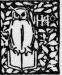

A Boy's Will | by Robert Frost
A collection of poems composed by the famous author Robert Frost.
| Title | A Boy's Will |
| Author | Robert Frost |
| Publisher | Henry Holt And Company |
| Year | 1915 |
| Copyright | 1915, Henry Holt And Company |
| Amazon | A Boy's Will |
By Robert Frost Author Or "North Of Boston"
Henry Holt And Company
TO E. M. F.
Part I: Into My Own
 Into My Own
Into My Own- One of my wishes is that those dark trees, So old and firm they scarcely show the breeze, Were not, as 'twere, the merest mask of gloom, But stretched away unto the edge of doom. I should not be wi...
- Ghost House
- I dwell in a lonely house I know That vanished many a summer ago, And left no trace but the cellar walls, And a cellar in which the daylight falls, And the purple-stemmed wild raspberries grow. O'e...
- My November Guest
- My Sorrow, when she's here with me, Thinks these dark days of autumn rain Are beautiful as days can be; She loves the bare, the withered tree; She walks the sodden pasture lane. Her pleasure ...
- Love And A Question
- A stranger came to the door at eve, And he spoke the bridegroom fair. He bore a green-white stick in his hand, And, for all burden, care. He asked with the eyes more than the lips For a shelter ...
- A Late Walk
- When I go up through the mowing field, The headless aftermath, Smooth-laid like thatch with the heavy dew, Half closes the garden path. And when I come to the garden ground, The whir of so...
- Stars
- How countlessly they congregate O'er our tumultuous snow, Which flows in shapes as tall as trees When wintry winds do blow!- As if with keenness for our fate, Our faltering few steps on To wh...
- Storm Fear
- When the wind works against us in the dark, And pelts with snow The lower chamber window on the east, And whispers with a sort of stifled bark, The beast, 1 Come out! Come out!'- It costs no inw...
- Wind And Window Flower
- Lovers, forget your love, And list to the love of these, She a window flower, And he a winter breeze. When the frosty window veil Was melted down at noon, And the caged yellow bird Hung ov...
- To The Thawing Wind
- Come with rain, O loud Southwester! Bring the singer, bring the nester; Give the buried flower a dream; Make the settled snow-bank steam; Find the brown beneath the white; But whate'er you do to-night...
- A Prayer In Spring
- Oh, give us pleasure in the flowers to-day; And give us not to think so far away As the uncertain harvest; keep us here All simply in the springing of the year. Oh, give us pleasure in the orchard ...
- Flower-Gathering
- I left you in the morning, And in the morning glow, You walked a way beside me To make me sad to go. Do you know me in the gloaming, Gaunt and dusty grey with roaming? Are you dumb b...
- Rose Pogonias
- A saturated meadow, Sun-shaped and jewel-small, A circle scarcely wider Than the trees around were tall; Where winds were quite excluded, And the air was stifling sweet With the breath of man...
- Asking For Roses
- A house that lacks, seemingly, mistress and master, With doors that none but the wind ever closes, Its floor all littered with glass and with plaster; It stands in a garden of old-fashioned rose...
- Waiting
- afield at dusk What things for dream there are when spectre-like, Moving among tall haycocks lightly piled, I enter alone upon the stubble field, From which the laborers' voices late have died, And...
- In A Vale
- When I was young, we dwelt in a vale By a misty fen that rang all night, And thus it was the maidens pale I knew so well, whose garments trail Across the reeds to a window light. The fen had eve...
- A Dream Pang
- I had withdrawn in forest, and my song Was swallowed up in leaves that blew alway; And to the forest edge you came one day (This was my dream) and looked and pondered long, But did not enter, thoug...
- In Neglect
- They leave us so to the way we took, As two in whom they were proved mistaken, That we sit sometimes in the wayside nook, With mischievous, vagrant, seraphic look, And try if we cannot feel forsake...
- The Vantage Point
- If tired of trees I seek again mankind, Well I know where to hie me-in the dawn, To a slope where the cattle keep the lawn. There amid lolling juniper reclined, Myself unseen, I see in white ...
- Mowing
- There was never a sound beside the wood but one, And that was my long scythe whispering to the ground. What was it it whispered? I knew not well myself; Perhaps it was something about the hea...
- Going For Water
- The well was dry beside the door, And so we went with pail and can Across the fields behind the house To seek the brook if still it ran; Not loth to have excuse to go, Because the autumn eve was...
Part II: Revelation
- Revelation
- We make ourselves a place apart Behind light words that tease and flout, But oh, the agitated heart Till someone find us really out. 'Tis pity if the case require (Or so we say) that in...
- The Trial By Existence
- Even the bravest that are slain Shall not dissemble their surprise On waking to find valor reign, Even as on earth, in paradise; And where they sought without the sword Wide fields of asphode...
- In Equal Sacrifice
- Thus of old the Douglas did: He left his land as he was bid With the royal heart of Robert the Bruce In a golden case with a golden lid, To carry the same to the Holy Land; By which we see...
- The Tuft Of Flowers
- I went to turn the grass once after one Who mowed it in the dew before the sun. The dew was gone that made his blade so keen Before I came to view the levelled scene. I looked for him behind an ...
- Spoils Of The Dead
- Two fairies it was On a still summer day Came forth in the woods With the flowers to play. The flowers they plucked They cast on the ground For others, and those For still others they foun...
- Pan With Us
- Pan came out of the woods one day,- His skin and his hair and his eyes were gray, The gray of the moss of walls were they,- And stood in the sun and looked his fill At wooded valley and wooded hill. ...
- The Demiurge's Laugh
- It was far in the sameness of the wood; I was running with joy on the Demon's trail, Though I knew what I hunted was no true god. It was just as the light was beginning to fail That I suddenly h...
Part III: Now Close The Windows
- Now Close The Windows
- Now close the windows and hush all the fields; If the trees must, let them silently toss; No bird is singing now, and if there ;s, Be it my loss. It will be long ere the marshes resume, It wi...
- A Line-Storm Song
- The line-storm clouds fly tattered and swift, The road is forlorn all day, Where a myriad snowy quartz stones lift, And the hoof-prints vanish away. The roadside flowers, too wet for the bee, ...
- October
- O hushed October morning mild, Thy leaves have ripened to the fall; To-morrow's wind, if it be wild, Should waste them all. The crows above the forest call; To-morrow they may form and go. O hushed Oc...
- My Butterfly
- Thine emulous fond flowers are dead, too, And the daft sun-assaulter, he That frighted thee so oft, is fled or dead: Save only me (Nor is it sad to thee!) Save only me There is none ...
- Reluctance
- Out through the fields and the woods And over the walls' I have wended; I have climbed the hills of view And looked at the world, and descended; I have come by the highway home, And lo, it is ended...